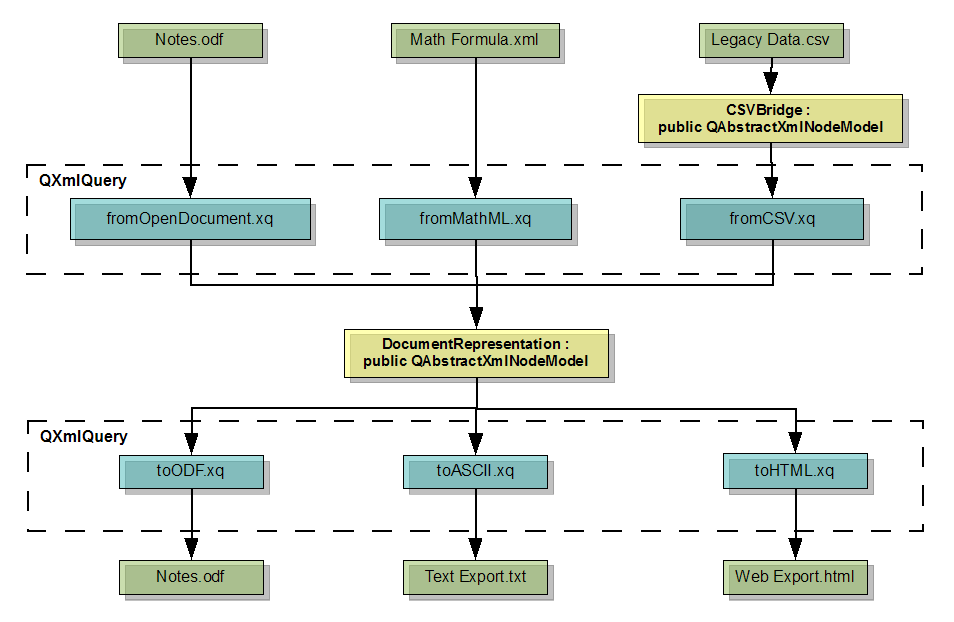

| Home · All Classes · Main Classes · Grouped Classes · Modules · Functions |
[Previous: QtXml Module] [Qt's Modules] [Next: Phonon Module]
An overview of Qt's XQuery support. More...
| QAbstractMessageHandler | Callback interface for handling messages |
|---|---|
| QAbstractUriResolver | Callback interface for resolving Uniform Resource Identifiers |
| QAbstractXmlNodeModel | Abstract base class for modeling non-XML data to look like XML for QXmlQuery |
| QAbstractXmlReceiver | Callback interface for transforming the output of a QXmlQuery |
| QSimpleXmlNodeModel | Implementation of QAbstractXmlNodeModel sufficient for many common cases |
| QSourceLocation | Identifies a location in a resource by URI, line, and column |
| QXmlFormatter | Implementation of QXmlSerializer for transforming XQuery output into formatted XML |
| QXmlItem | Contains either an XML node or an atomic value |
| QXmlName | Represents the name of an XML node, in an efficient, namespace-aware way |
| QXmlNamePool | Table of shared strings referenced by instances of QXmlName |
| QXmlNodeModelIndex | Identifies a node in an XML node model subclassed from QAbstractXmlNodeModel |
| QXmlQuery | Performs XQueries on XML data, or on non-XML data modeled to look like XML |
| QXmlResultItems | Iterates through the results of evaluating an XQuery in QXmlQuery |
| QXmlSerializer | Implementation of QAbstractXmlReceiver for transforming XQuery output into unformatted XML |
XQuery is a pragmatic language that allows XML to be queried and created in fast, concise, and safe ways.
The QtXmlPatterns module is part of the Qt Desktop Edition, and the Qt Open Source Edition.
<bibliography>
{
doc("library.xml")/bib/book[publisher = "Addison-Wesley" and @year > 1991]/
<book year="{@year}">{title}</book>
}
</bibliography>
The query opens the file library.xml, and for each book element that is a child of the top element bib, and whose attribute by name year is larger than 1991 and has Addison-Wesley as a publisher, it constructs a book element and attaches it to the parent element called bibliography.
XQuery is made for selecting and aggregating information in safe and efficient ways. Hence, if an application selects and navigates data, XQuery could be used to perform the selection and navigation tasks quickly and bug-free. With QAbstractXmlNodeModel, these advantages are not constrained to operating only on XML files, but can be applied to other data as well.
The strengths of XQuery can be summarized as follows:
Evaluation of an XQuery can be performed programatically, using the QtXmlPatterns C++ API, or by running the XQuery engine directly using the command line interface.
A C++ application that uses classes from the QtXmlPatterns module includes the classes at compilation time with the following:
#include <QtXmlPatterns>
The application is linked with the QtXmlPatterns module by adding the following line to the qmake .pro file:
QT += xmlpatterns
Note that if you build Qt yourself, QtXmlPatterns will not be built if exceptions are disabled, or if you compile Qt with a compiler that doesn't support member templates, e.g., MSVC 6.
See the QXmlQuery documentation for the QtXmlPatterns C++ API.
xmlpatterns is a command line utility for running XQueries. It takes as its single argument the name of a file containing the text of the XQuery to be evaluated.
xmlpatterns myQuery.xq
The XQuery in myQuery.xq will be evaluated and its output written to stdout.
Passing the -help switch on the command line tells xmlpatterns to print brief descriptions of the other flags it accepts.
xmlpatterns can be used for scripting, but the descriptions and messages it outputs are not designed to be parsed, and they may be changed in future releases of Qt.
See A Short Path to XQuery for a brief introduction to the XQuery language.
XQuery and Qt don't represent data the same way. XQuery represents data as a sequence of items, where an item is either an atomic value or a node. Atomic values are the primitives specified in the W3C XML Schema. Nodes are normally XML elements or attributes, but nodes can also represent non-XML data items, when non-XML data is modeled with a custom subclass of QAbstractXmlNodeModel.
When XQuery Atomic Values are returned as XQuery result items via the QtXmlPatterns API, they are represented as instances of the QVariant class. The mapping from XQuery Atomic Value types to QVariant types (or to QXmlName) is as follows.
| An XQuery Atomic Value of type... | is returned as an instance of... |
|---|---|
| xs:QName | QXmlName (see Using QXmlNames below) |
| xs:integer | QVariant::LongLong |
| xs:string | QVariant::String |
| xs:string* | QVariant::StringList |
| xs:double | QVariant::Double |
| xs:float | QVariant::Double |
| xs:boolean | QVariant::Bool |
| xs:decimal | QVariant::Double |
| xs:hexBinary | QVariant::ByteArray |
| xs:base64Binary | QVariant::ByteArray |
| xs:gYear | QVariant::DateTime |
| xs:gYearMonth | QVariant::DateTime |
| xs:gMonthDay | QVariant::DateTime |
| xs:gDay | QVariant::DateTime |
| xs:gMonth | QVariant::DateTime |
| xs:anyURI | QVariant::Url |
| xs:untypedAtomic | QVariant::String |
| xs:ENTITY | QVariant::String |
| xs:date | QVariant::DateTime |
| xs:dateTime | QVariant::DateTime |
| xs:time | (see No mapping for xs:time below) |
To access the strings in a QXmlName returned by an XQuery evaluation, the QXmlName must be accessed with the name pool from the instance of QXmlQuery that was used for the evaluation.
An instance of xs:time can't be represented correctly as an instance of QVariant::Time, unless the xs:time is a UTC time. This is because xs:time has a zone offset (0 for UTC) in addition to the time value, which the QTime in QVariant::Time does not have. This means that if an XQuery tries to return an atomic value of type xs:time, an invalid QVariant will be returned. A query can return an atomic value of type xs:time by either converting it to an xs:dateTime with an arbitrary date, or to an xs:string.
The reverse mapping from QVariant to XQuery Atomic Value is important when you want to bind a variable in your program to a $name used in your XQuery.
| An instance of... | can be bound to an XQuery variable of type... |
|---|---|
| QVariant::LongLong | xs:integer |
| QVariant::Int | xs:integer |
| QVariant::UInt | xs:nonNegativeInteger |
| QVariant::ULongLong | xs:unsignedLong |
| QVariant::String | xs:string |
| QVariant::Double | xs:double |
| QVariant::Bool | xs:boolean |
| QVariant::Double | xs:decimal |
| QVariant::ByteArray | xs:base64Binary |
| QVariant::StringList | xs:string* |
| QVariant::Url | xs:string |
| QVariant::Date | xs:date. |
| QVariant::DateTime | xs:dateTime |
| QVariant::Time. | xs:time. (see Binding To QVariant::Time below) |
| QVariantList | (see Binding To QVariantList below) |
Types other than the ones listed in the table are not supported and will either cause undefined XQuery behavior or a nonexistent variable binding, depending on the context where the variable is used.
Because the instance of QTime used in QVariant::Time does not include a zone offset, an instance of QVariant::Time should not be bound to an XQuery variable of type xs:time, unless the QTime is UTC. When binding a non-UTC QTime to an XQuery variable, it should first be passed as a string, or converted to a QDateTime with an arbitrary date, and then bound to an XQuery variable of type xs:dateTime.
A QVariantList can be bound to an XQuery variable name. All the QVariants in the list must be of the same type, and the variable the list is bound to must be of the same type. If the QVariants in the list are not all of the same type, the XQuery behavior is undefined.
Although the XQuery language was designed for querying XML, with QtXmlPatterns one can use XQuery for querying any data that can be modeled to look like XML. Non-XML data is modeled to look like XML by loading it into a custom subclass of QAbstractXmlNodeModel, where it is then presented to the QtXmlPatterns XQuery engine via the same API the XQuery engine uses for querying XML.
When QtXmlPatterns loads and queries XML files and produces XML output, it can always load the XML data into its default XML node model, where it can be traversed efficiently. The XQuery below traverses the product orders found in the XML file myOrders.xml to find all the skin care product orders and output them ordered by shipping date.
<result>
<para>The following skin care products have shipped, ordered by shipping date(oldest first):</para>
{
for $i in doc("myOrders.xml")/orders/order[@product = "Acme Skin Care"]
order by xs:date($i/@shippingDate) descending
return $i
}
</result>
QtXmlPatterns can be used out of the box to perform this query, provided myOrders.xml actually contains well-formed XML. It can be loaded directly into the default XML node model and traversed. But suppose we want QtXmlPatterns to perform queries on the hierarchical structure of the local file system. The default XML node model in QtXmlPatterns is not suitable for navigating the file system, because there is no XML file to load that contains a description of it. Such an XML file, if it existed, might look something like this:
<?xml version="1.0" encoding="UTF-8"?>
<directory name="home">
<file name="myNote.txt" mimetype="text/plain" size="8" extension="txt" uri="file:///home/frans/myNote.txt">
<content asBase64Binary="TXkgTm90ZSE=" asStringFromUTF-8="My Note!"/>
</file>
<directory name="src">
...
</directory>
...
</directory>
The File System Example does exactly this.
There is no such file to load into the default XML node model, but one can write a subclass of QAbstractXmlNodeModel to represent the file system. This custom XML node model, once populated with all the directory and file descriptors obtained directly from the system, presents the complete file system hierarchy to the query engine via the same API used by the default XML node model to present the contents of an XML file. In other words, once the custom XML node model is populated, it presents the file system to the query engine as if a description of it had been loaded into the default XML node model from an XML file like the one shown above.
Now we can write an XQuery to find all the XML files and parse them to find the ones that don't contain well-formed XML.
<html>
<body>
{
$myRoot//file[@mimetype = 'text/xml' or @mimetype = 'application/xml']
/
(if(doc-available(@uri))
then ()
else <p>Failed to parse file {@uri}.</p>)
}
</body>
</html>
Without QtXmlPatterns, there is no simple way to solve this kind of problem. You might do it by writing a C++ program to traverse the file system, sniff out all the XML files, and submit each one to an XML parser to test that it contains valid XML. The C++ code required to write that program will probably be more complex than the C++ code required to subclass QAbstractXmlNodeModel, but even if the two are comparable, your custom C++ program can be used only for that one task, while your custom XML node model can be used by any XQuery that must navigate the file system.
The general approach to using XQuery to perform queries on non-XML data has been a three step process. In the first step, the data is loaded into a non-XML data model. In the second step, the non-XML data model is serialized as XML and output to XML (text) files. In the final step, an XML tool loads the XML files into a second, XML data model, where the XQueries can be performed. The development cost of implementing this process is often high, and the three step system that results is inefficient because the two data models must be built and maintained separately.
With QtXmlPatterns, subclassing QAbstractXmlNodeModel eliminates the transformation required to convert the non-XML data model to the XML data model, because there is only ever one data model required. The non-XML data model presents the non-XML data to the query engine via the XML data model API. Also, since the query engine uses the API to access the QAbstractXmlNodeModel, the data model subclass can construct the elements, attributes and other data on demand, responding to the query's specific requests. This can greatly improve efficiency, because it means the entire model might not have to be built. For example, in the file system model above, it is not necessary to build an instance for a whole XML file representing the whole file system. Instead nodes are created on demand, which also likely is a small subset of the file system.
Examples of other places where XQuery could be used in QtXmlPatterns to query non-XML data:
See the QAbstractXmlNodeModel documentation for information about how to implement custom XML node models.
Subclassing QAbstractXmlNodeModel to let the query engine access non-XML data by the same API it uses for XML is the feature that enables QtXmlPatterns to query non-XML data with XQuery. It allows XQuery to be used as a mapping layer between different non-XML node models or between a non-XML node model and the built-in XML node model. Once the subclass(es) of QAbstractXmlNodeModel have been written, XQuery can be used to select a set of elements from one node model, transform the selected elements, and then write them out, either as XML using QXmlQuery::evaluateTo() and QXmlSerializer, or as some other format using a subclass of QAbstractXmlReceiver.
Consider a word processor application that must import and export data in several different formats. Rather than writing a lot of C++ code to convert each input format to an intermediate form, and more C++ code to convert the intermediate form back to each output format, one can implement a solution based on QtXmlPatterns that uses simple XQueries to transform each XML or non-XML format (e.g. MathFormula.xml below) to the intermediate form (e.g. the DocumentRepresentation node model class below), and more simple XQueries to transform the intermediate form back to each XML or non-XML format.

Because CSV files are not XML, a subclass of QAbstractXmlNodeModel is used to present the CSV data to the XQuery engine as if it were XML. What are not shown are the subclasses of QAbstractXmlReceiver that would then send the selected elements into the DocumentRepresentation node model, and the subclasses of QAbstractXmlNodeModel that would ultimately write the output files in each format.
Like SQL, XQuery is vulnerable to code injection attacks. If an XQuery is constructed by concatenation, where concatenated strings can come from user input, the final XQuery can become malevolent. The best way to prevent code injection attacks is to not construct XQueries from user-written strings, but only accept user data input using QVariant and variable bindings. See QXmlQuery::bindVariable()
The articles Avoid the dangers of XPath injection, Robi Sen and Blind XPath Injection, Amit Klein discuss the XQuery code injection problem in more detail.
Applications using QtXmlPatterns are subject to the same software limits as any other system. Generally, these can not be checked. This means QtXmlPatterns does not prevent rogue queries from consuming too many resources. For example, a query could take too much time to execute, or could attempt to transfer too much data. Or a query could cause an unreasonable amount of recursion, which could crash the system. XQueries can do these things accidentally, but they can also be meant as deliberate, denial of service attacks.
QtXmlPatterns aims at being a conformant XQuery processor. Apart from adhering to {http://www.w3.org/TR/xquery/#id-minimal-conformance} {Minimal Conformance}, QtXmlPatterns supports the Serialization Feature and the Full Axis Feature. QtXmlPatterns passes 97% of the tests in the XML Query Test Suite, and it is expected this will improve over time. Areas where conformance may be questionable and where behavior may be changed in future releases are:
XML 1.0 and XML Namespaces 1.0 are supported, as opposed to the 1.1 versions. When a strings is passed to a query as a QString, the characters must be XML 1.0 characters. Otherwise, the behavior is undefined. This is not checked.
Since XPath 2.0 is a subset of XQuery 1.0, it is supported.
The specifications discusses conformance further: XQuery 1.0: An XML Query Language. W3C's XQuery testing effort can be of interest as well, XML Query Test Suite.
Currently fn:collection() does not access any data set, and there is no API for providing data through the collection. As a result, evaluating fn:collection() returns the empty sequence. We intend to provide functionality for this in a future release of Qt.
Processing of XML files supports xml:id. In practice, this allows elements that have an attribute named xml:id to be looked up efficiently with the fn:id() function. See xml:id Version 1.0 for details.
Only queries encoded in UTF-8 are supported.
When QtXmlPatterns loads an XML resource, e.g., using fn:doc() function, the following schemes are supported:
| Scheme Name | Description |
|---|---|
| file | Local files. |
| data | The bytes are encoded in the URI itself. For instance, data:application/xml,%3Ce%2F%3E is <e/>. |
| ftp | Resources retrieved via FTP. |
| http | Resources retrieved via HTTP. |
| https | Resources retrieved via HTTPS. This will succeed if no SSL errors are encountered. |
| qrc | Qt Resource files. Expressing it as an empty scheme, :/..., is not supported. |
URIs are first passed to QAbstractUriResolver. Check QXmlQuery::setUriResolver() for possible rewrites.
[Previous: QtXml Module] [Qt's Modules] [Next: Phonon Module]
| Copyright © 2008 Trolltech | Trademarks | Qt 4.4.1 |